Chapter 4 확률변수
4.1 확률변수의 개념
실험에 의하여 얻어진 실험결과를 숫자로 표기
- \(\rightarrow\) 실험 결과 자체를 표기하는 것 보다 더 효율적
정상적인 동전 한 개를 한 번 던질 경우
표본공간 \(S=\{H, T\}\)
확률변수 \(X\): 동전 1개를 한 번 던졌을 때의 앞면의 수 \[X(\{H\})=1, \hskip5pt X(\{T\})=0\]
확률변수 \(X\)는 표본공간 \(S\)의 원소를 실수공간 \(R\)의 원소인 실수 값에 대응시키는 함수
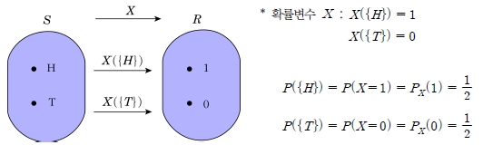
확률변수(random variable)는 표본공간 내에 있는 각 원소를 하나의 실수값에 대응시키는 함수로 정의된다.
확률변수의 종류
이산형 확률변수(discrete random variable)
연속형 확률변수(continuous random variable)
이산형 확률변수
일정 범위 내의 실수 사이에서 확률변수 \(X\)가 가질 수 있는 값의 수가 \(x_1, x_2, x_3, \ldots\)과 같이 유한하거나 무한개로 셀 수 있는(countable) 변수
\(0\) 또는 양의 정수를 가짐
동전 1,000개를 동시에 던졌을 때 앞면의 수
연속형 확률변수
어떤 통계적 실험에서 출현 가능한 결과들이 유한하지도 않고 셀 수 없는 변수
사람의 키나 몸무게
이산형 표본공간과 연속형 표본공간 표본공간이 셀 수 있는 원소로 이루어졌을 때 이산형 표본공간(discrete sample space)이라 하고 표본공간이 실선의 어떤 구간 내의 모든 수를 포함할 때 연속형 표본공간(continuous sample space)이라 한다.
다음의 확률변수가 이산형 표본공간을 갖는지, 연속형 표본공간을 갖는지를 정의하라.
오타 수, 상품의 결점 수, 수명, 대기시간,
키, 병원에 들어온 환자의 수, 혈압
(풀이)
이산형 표본공간: 오타 수, 상품의 결점 수, 병원에 들어온 환자의 수
연속형 표본공간: 수명, 대기시간, 키, 혈압
확률변수는 대문자(예: \(X\))로 나타내고, 확률변수 \(X\)가 가지는 하나의 값(관찰값)은 소문자(예: \(x\))로 나타냄
공평한 동전을 세 번 던지는 실험에서 앞면이 나오는 개수를 확률변수 \(X\)로 놓으면 실현 가능한 \(x\)의 값과 \(x\)에 대한 확률을 구하시오.
(풀이)
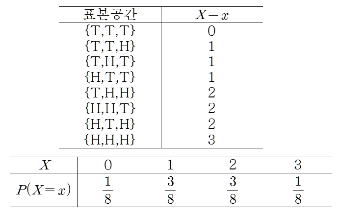
4.2 이산형 확률분포와 연속형 확률분포
4.2.1 이산형 확률분포
이산형 확률분포: 관찰된 각 값에 확률이 부여됨
동전 한 개를 한 번 던질 경우
- \(X\): 앞면이 나오는 횟수
\(X\)가 취할 수 있는 가능한 값 \(x\)와 그에 대한 확률
\(x\) 0 1 \(P(X=x)\) 1/2 1/2 위의 \(x\) 값은 \(X\)가 취할 수 있는 모든 값들이므로, 각 값에 대한 확률의 합은 무조건 1이 됨
이산형 확률변수의 확률분포(probability distribution)
- 이산형 확률변수가 취할 수 있는 모든 값들과 이에 대응하는 각각의 확률을 계산할 수 있는 식, 표 또는 그래프를 이산형 확률변수의 확률분포라 함
이산형 확률분포
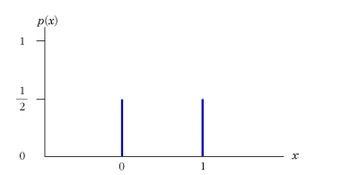
확률변수 \(X\)가 \(x_1, x_2, \ldots\)의 값을 갖는 이산형 확률변수이면 확률변수 \(X\)의 확률질량함수(probability mass function)는 다음과 같이 정의된다. \[p(x)=\begin{cases} P(X=x), \hskip5pt x=x_i, \hskip5pt i=1, 2, \ldots \\ 0, \hskip5pt x\ne x_i \end{cases}\]
모든 \(x_i, \hskip3pt i=1, 2, \ldots\)에 대해 다음의 조건을 만족하는 \(p(x)\)를 이산형 확률변수 \(X\)의 확률질량함수라고 한다.
\(p(x_i)>0, \hskip3pt i=1, 2, \ldots\)
\(p(x)=0, \hskip3pt x\ne x_i,\hskip3pt i=1, 2, \ldots\)
\(\sum_i p(x_i)=1, \hskip3pt i=1, 2, \ldots\)
동전 한 개와 주사위 한 개를 동시에 던져 동전의 앞면이 나오면 주사위의 값에 1을 더하고 뒷면이 나오면 1을 뺀 값을 확률변수 \(X\)라고 할 때, 확률분포표를 작성하라.
(풀이)
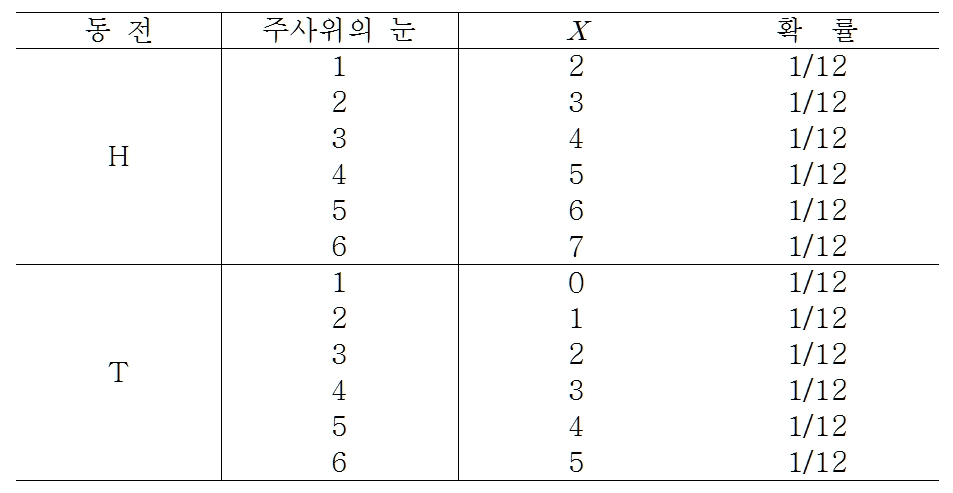
확률분포표
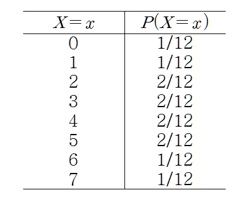
실제로는 확률변수 \(X\)의 관찰값이 임의의 어떤 실수 \(x\)보다 작거나 같을 확률을 알면 확률변수의 분포를 알 수 있음
확률변수 \(X\)의 누적분포함수(cumulative distribution function: c.d.f)
- 임의의 값 \(x\)에 대해 \[F(x)=P(X\le x)\]
확률분포 \(p(x)\)를 가지는 이산형 확률변수 \(X\)의 누적분포함수 \(F(x)\)는 \[F(x)=P(X\le x)=\sum_{\{i:x_i\le x\}} p(x_i), \hskip3pt \infty<x<\infty\] 로 정의된다. 참고로 이산형 확률변수에 대한 누적분포함수는 계단 형태의 함수(step function)가 된다
누적분포함수의 특성
\(F(-\infty)=0, \hskip3pt F(\infty)=1\)
\(F(x)\)는 단조함수(monotone function)이면서 비감소(nondecreasing)함수이다. 즉, \[F(a)\le F(b), \hskip3pt \text{단} \hskip3pt a<b\]
\(F(x)\)는 우측으로부터 연속이다. \[\lim_{0<h\rightarrow 0}F(x+h)=F(x)\]
이산형 확률변수 \(X\)의 확률질량함수는 \(p(x)=\frac{x}{6}, \hskip3pt x=1, 2, 3\)이다.
누적분포함수를 구하고 이를 그래프로 표현하라.
\(P(1.5<X<4.5)\)를 구하라.
(풀이)
누적분포함수를 구하면 다음과 같다. \[F(x)=\begin{cases} 0, \hskip3pt x<1\\ \frac{1}{6},\hskip3pt 1\le x<2 \\ \frac{3}{6},\hskip3pt 2\le x <3\\ 1,\hskip3pt 3\le x \end{cases}\]
\(X\)는 이산형 확률변수이므로 확률질량함수와 누적분포함수를 이용할 수 있다. \[P(1.5<X\le 4.5)=F(4.5)-F(1.5)=1-\frac{1}{6}=\frac{5}{6}=p(2)+P(3)\]
확률질량함수와 누적분포함수
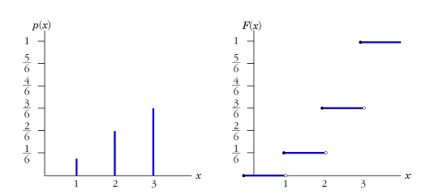
다음의 함수가 이산형 확률변수 \(X\)의 확률질량함수가 되기 위한 \(c\)를 정의하라.
\(p(x)=c\left(\frac{2}{3}\right)^x, \hskip3pt x=1, 2, 3, \ldots\)
\(p(x)=cx, \hskip3pt x=1, 2, 3, 4, 5, 6\)
(풀이)
\(\sum_{i=1}^\infty c\left(\frac{2}{3}\right)^x=1,\hskip5pt c\times \frac{2/3}{1-2/3}=2c=1\)
따라서 \(c=\frac{1}{2}\)이다.
\(\sum_{i=1}^6 cx=1, \hskip5pt c\times\frac{6\times7}{2}=21c=1\)
따라서 \(c=\frac{1}{21}\)이다.
주사위를 눈이 6이 나올 때까지 던지는 실험을 고려하여 다음 문제를 해결하라.
주사위 눈이 처음으로 6이 나오는 실험횟수를 \(X\)라고 하고 \(X\)의 확률질량함수를 구하라.
\(X\)의 확률질량함수 \(p(x)\)에 대해 \(\sum_{x=1}^\infty p(x)=1\)을 증명하라.
\(P(X=1, 3, 5, 7, \ldots)\)를 계산하라.
\(X\)의 누적분포함수를 구하라.
(풀이)
\(p(1)=\frac{1}{6}\), \(p(2)=\frac{1}{6}\cdot\frac{5}{6}\), \(p(3)=\frac{1}{6}\cdot(\frac{5}{6})^2\), \(\ldots\)이므로 \(X\)의 확률질량함수는 다음과 같다. \[p(x)=\frac{1}{6}\cdot\left(\frac{5}{6}\right)^{x-1}, \hskip3pt x=1, 2, 3, \ldots\]
\(\sum_{x=1}^\infty \frac{1}{6} \left(\frac{5}{6}\right)^{x-1}=\frac{1/6}{1-5/6}=1\)
\(p(1)=\frac{1}{6}\), \(p(3)=\frac{1}{6}\cdot(\frac{5}{6})^2\), \(p(5)=\frac{1}{6}\cdot(\frac{5}{6})^4\), \(\ldots\)이므로 \[P(X=1, 3, 5, \ldots)=\frac{1/6}{1-(\frac{5}{6})^2}=\frac{6}{36-25}=\frac{6}{11}\]
\[F(x)=P(X\le x)=\begin{cases}\sum_{k=1}^{[x]} \frac{1}{6}\left(\frac{5}{6}\right)^{k-1}=\frac{\frac{1}{6}\left[1-\left(\frac{5}{6}\right)^{[x]}\right]}{1-\frac{5}{6}}=1-\left(\frac{5}{6}\right)^{[x]}, \hskip3pt x=1, 2, \ldots\\ 0, \hskip3pt \text{그 외} \end{cases}\]
\([x]\): \(x\)와 같거나 \(x\)보다 작은 최대 정수함수(greatest integer function)
4.2.2 연속형 확률분포
연속형 확률변수(continuous random variable)
- 하나 또는 여러 개 구간으로 이루어진 어떤 일정한 범위에 있는 모든 실수 값을 가지는 확률변수
정확히 어느 하나의 값을 가지게 될 확률은 0, \(P(X=x)=0\)
연속형 확률분포에서는 확률변수의 어느 한 점의 값보다는 어떤 구간에 관심을 가짐. e.g) \(P(a<X<b),\hskip3pt P(X>c)\)
\(P(a\le X\le b)=P(a\le X<b)=P(a<X\le b)=P(a<X<b)\)가 성립
확률밀도함수(probability density function: p.d.f)
- 연속형 확률변수의 확률분포를 표 형태로는 표시할 수 없지만 함수 형태로는 표시할 수 있으며, 이때의 확률분포는 함수 기호 \(f(x)\)를 사용
확률변수 \(X\)가 연속형 확률변수이고 \(F(x)=\int_{-\infty}^x f(t)dt\)의 \(f(x)\)를 \(X\)의 확률밀도함수(probability density function)라고 한다.
다음의 조건이 만족되면 \(f(x)\)를 실수의 집합 \(R\)상에서 정의된 연속형 확률변수에 대한 확률밀도함수라고 한다.
모든 \(x\in R\)에 대하여 \(f(x)\ge 0\)
\(\int_{-\infty}^\infty f(x)dx=1\)
\(f(x)=(3/16)x^2, \hskip3pt -c<x<c\)가 확률변수 \(X\)의 확률밀도함수가 되도록 \(c\)를 정하라.
(풀이) \[\int_{-\infty}^{\infty} f(x)dx=\int_{-c}^{c} \frac{3}{16}x^2dx=\left[\frac{x^3}{16}\right]_{-c}^c=\frac{2c^3}{16}=\frac{c^3}{8}=1\]
\(c^3=8\)이므로 \(c=2\)가 된다.
\(X\)가 \(a\)와 \(b\) 사이에 있을 확률은 \(f(x)\)의 그래프에서 구간 \((a, b)\) 사이의 \(f(x)\)와 \(X\)축 사이의 면적이 되고 다음과 같이 표시된다. \[P(a<X<b)=\int_a^b f(x)dx\]
확률밀도함수와 확률
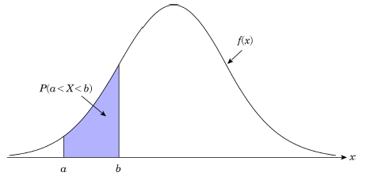
정리 4.2에 의해 \(f(a)=P(X=a)=P(a \le X \le a)=\int_a^a f(x)dx=0\)
- 연속형 확률분포에서 한 점에서의 확률은 0임
\(f(x)=cx\)가 구간 \(0\le x \le 4\)에 대해 확률밀도함수가 되도록 \(c\)를 결정하라. 그리고 \(P(2<X<3)\)를 구하라.
- (풀이) \[\int_{-\infty}^{\infty} f(x)dx=\int_{0}^{4} cxdx=c\left[\frac{x^2}{2}\right]_{0}^4=c\frac{16}{2}=8c=1 \rightarrow c=\frac{1}{8}\]
어떤 전구의 수명시간 \(X\)가 다음의 확률분포를 따른다고 한다. 전구의 수명이 5시간 이상일 확률을 구하라. \[f(x)=e^{-x}, \hskip5pt x\ge 0\]
- (풀이) \[P(X\ge 5)=\int_{5}^\infty e^{-x} dx=[-e^{-x}]_5^\infty =e^{-5}\]
확률밀도함수가 \(f(x)\)인 연속형 확률변수 \(X\)의 누적분포함수 \(F(x)\)는 다음과 같다. \[F(x)=P(X\le x)=\int_{-\infty}^x f(t)dt, \hskip5pt -\infty<x<\infty\]
$f(x)= \[\begin{cases} cx^2, \hskip3pt -1<x<2 \\ 0, \hskip3pt \text{그 외} \end{cases}\]
- \(P(a<X<b)=F(b)-F(a)\)
- \(F(x)\)가 미분 가능할 때 \(f(x)=\frac{dF(x)}{dx}\)
$일 때 다음 물음에 답하라.
주어진 \(f(x)\)가 확률밀도함수의 성질을 만족하도록 \(c\)를 정하라.
\(P(-1<X<1)\)을 구하라.
\(F(x)\)를 구하고 \(F(x)\)를 이용하여 \(P(-1<X<1)\)를 구하라.
(풀이)
\(\int_{-\infty}^\infty f(x)dx=\int_{-1}^2 cx^2dx=[\frac{c}{3}x^3]_{-1}^2=3c \rightarrow c=\frac{1}{3}\)
따라서 \(f(x)=\frac{1}{3}x^2, \hskip5pt -1<x<2\)
\(P(-1<X<1)=\int_{-1}^{1}\frac{x^2}{3}dx=[\frac{x^3}{9}]_{-1}^1=\frac{2}{9}\)
\(F(x)=\int_{-1}^{x}\frac{t^2}{3}dt=[\frac{t^3}{9}]_{-1}^x=\frac{x^3+1}{9}\)
\[F(x)=\begin{cases} 0, \hskip5pt x<-1\\ \frac{x^3+1}{9}, \hskip5pt -1\le x <2 \\ 1, \hskip5pt x\ge 2 \end{cases}\]
\(P(-1<X<1)=F(1)-F(-1)=\frac{2}{9}-0=\frac{2}{9}\)
확률밀도함수와 누적분포함수
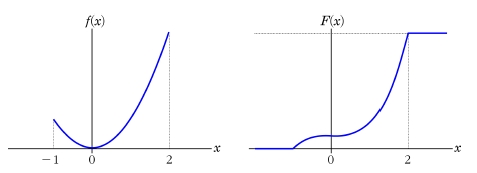
$일 때 다음을 구하라.
\(f(x)\)의 누적분포함수를 구하라.
\(P(1<X<1.5)\)을 구하라.
\(P(X>1)\)를 구하라.
(풀이)
\(F(x)=\int_{-\infty}^xf(t)dt=\int_{0}^x \frac{2}{3}-\frac{2}{9}tdt=[\frac{2}{3}t-\frac{1}{9}t^2]_0^x=\frac{2}{3}x-\frac{1}{9}x^2\) \[F(x)=\begin{cases} 0, \hskip5pt x<0\\ \frac{2}{3}x-\frac{1}{9}x^2, \hskip5pt 0\le x <3\\ 1, \hskip5pt x\ge 3 \end{cases}\]
\(P(1\le X \le 1.5)=F(1.5)-F(1)=7/36\)
\(P(X>1)=1-F(1)=1-[2/3-1/9]=4/9\)
확률밀도함수와 누적분포함수
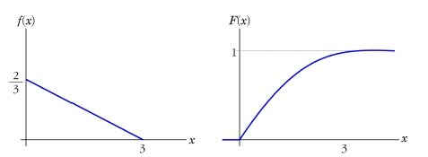
\(f(x)=Ke^{-ax}(1-e^{-ax}), \hskip3pt 0<x<\infty\), 일 때 다음을 구하라
\(f(x)\)가 확률밀도함수가 되는 \(K\)를 찾아라.
누적분포함수를 구하라.
\(P(X>1)\)를 구하라.
(풀이)
\(\int_0^\infty Ke^{-ax}-Ke^{-2ax}dx=[-\frac{K}{a}e^{-ax}+\frac{K}{2a}e^{-2ax}]_0^\infty =\frac{K}{a}-\frac{K}{2a}=\frac{K}{2a}=1\)
따라서 \(K=2a\)
a)의 적분에서 \(K\)대신 \(2a\)를 대입하고 \(\infty\) 대신 \(x\)를 대입하면 \[F(x)= \int_0^x 2ae^{-at}-2ae^{-2at}dt=[-2e^{-ax}+e^{-2at}]_0^x=-2e^{-ax}+e^{-2ax}+1\]
따라서 cdf \(F(x)=-2e^{-ax}+e^{-2ax}+1, \hskip5pt 0<x<\infty\)
\(P(X>1)=1-P(X<1)=1+2e^{-a}-e^{-2a}-1=2e^{-a}-e^{-2a}\)
4.3 기대값과 분산
4.3.1 기대값
기대값(expected value): 확률변수를 대표하는 값
- 분포의 중심을 나타내는 값
기대값은 확률변수가 취할 수 있는 모든 값들의 평균이라는 의미
표본평균 \(\bar{X}\)와 구별하기 위해 모집단의 기대값은 보통 \(\mu\) 또는 \(E(X)\)로 표기
표본평균 \(\bar{X}\)는 모집단에서 추출된 표본에서 구해지며, 모평균 \(\mu\)는 모집단의 확률분포를 이용하여 구함
동전 1개를 던져 앞면이 나오면 1원을 받고 뒷면이 나오면 돈을 받지 못하는 경우
- 기대값 = \(1\times \frac{1}{2} + 0 \times \frac{1}{2}=0.5\)
0.5원은 이러한 시행을 무수히 많이 했을 때 전체적으로 어느 정도 기대되는가 하는 추상적인 의미를 가짐
게임을 무수히 많이 반복할 경우 평균적으로 0.5원을 받게 됨
\(X\)가 이산형 확률분포 \(p(x)\)를 가지는 이산형 확률변수 또는 \(X\)가 연속형 확률분포 \(f(x)\)를 가지는 연속형 확률변수라고 할 때 확률변수 \(X\)의 평균 혹은 기대값은 다음과 같다. \[\mu=E(X)=\begin{cases} \sum_x xp(x), \hskip5pt X\text{가 이산형인 경우} \\ \int_{-\infty}^{\infty}xf(x)dx,\hskip5pt X\text{가 연속형인 경우} \end{cases}\]
\(\mu=4\)를 갖는 두 개의 다른 확률분포
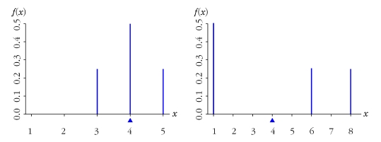
두 개의 동전을 던지는 실험에서 확률변수 \(X\)는 앞면이 나온 수를 나타낸다. \(X\)의 기대값은 얼마인가?
(풀이)
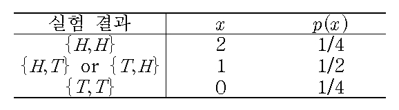
따라서 \(\mu=E(x)=0\times \frac{1}{4}+1\times{1}{2}+2\times\frac{1}{4}=1\)
동전을 세 번 던져서 앞면이 나오는 횟수 \(X\)의 기대값을 구하라.
(풀이)
\(E(x)=\sum_{x=0}^3 xP(X=x)=0\times\frac{1}{8}+1\times\frac{3}{8}+2\times\frac{3}{8}+3\times\frac{1}{8}=\frac{12}{8}=1.5\)
$일 때 확률변수 \(X\)의 기대값을 구하라.
(풀이)
\(\mu=E(X)=\int_{-1}^2 x\frac{x^2}{3}dx=[\frac{x^4}{12}]_{-1}^2=\frac{5}{4}\)
방금 결혼한 신혼부부는 결혼 후 딸을 갖기를 원하고 있어 딸을 얻을 때까지 아기를 계속 낳기로 하였다. 이 때 가질 수 있는 자녀의 수를 확률변수 \(X\)라고 하면 다음과 같은 \(X\)의 확률질량함수를 얻을 수 있다. 이 신혼부부가 가질 수 있는 자녀수의 기대값을 구하라. 여기서 \(p\)는 한번 아기를 가질 때 딸일 확률이다. \[\begin{aligned} p(x)=p(1-p)^{x-1} \hskip5pt x=1, 2, 3, \ldots\end{aligned}\]
(풀이)
\(\mu=E(X)=\sum_{x=1}^\infty xp(x)=\sum_{x=0}^\infty xp(1-p)^{x-1}=p\sum_{x=0}^\infty [-\frac{d}{dp}(1-p)^x]=\frac{1}{p}\)
\(X\)가 이산형 확률분포 \(p(x)\)를 가지는 이산형 확률변수 또는 \(X\)가 연속형 확률분포 \(f(x)\)를 가지는 연속형 확률변수라고 할 때 확률변수 \(g(X)\)의 평균 혹은 기대값은 다음과 같다. \[\mu_{g(X)}=E(g(X))=\begin{cases} \sum_x g(x)p(x), \hskip5pt X\text{가 이산형인 경우} \\ \int_{-\infty}^{\infty}g(x)f(x)dx,\hskip5pt X\text{가 연속형인 경우} \end{cases}\]
동전을 2개 던지는 실험에서 확률변수 \(X\)를 앞면이 나오는 횟수라고 정의하면 \(X\)의 확률질량함수는 다음과 같다. \[p(x)=\begin{cases} \frac{1}{4}, \hskip5pt x=0, 2\\ \frac{1}{2}, \hskip5pt x=1 \end{cases}\] 여기서 \(g(x)=(\frac{2x-1}{3})^2\)라고 할 때 \(E(g(X))\)를 구하라.
(풀이)
\(E(g(X))=\sum_x g(x)p(x)=\frac{1}{9}\cdot \frac{1}{4}+\frac{1}{9}\cdot\frac{1}{2}+1\cdot\frac{1}{4}=\frac{1}{3}\)
확률변수 \(X\)의 확률질량함수가 \(p(x)=\frac{x}{10}, \hskip5pt x=1, 2, 3, 4\)라고 할 때 \(g(X)=X(5-X)\)의 기대값을 구하라.
(풀이) \[방법 1\] \[\begin{aligned} E(X(5-X))&=\sum_{x=1}^4x(5-x)\frac{x}{10} \\ &= 4\times1\times\frac{1}{10}+2\times3\times\frac{2}{10}+3\times2\times\frac{3}{10}+4\times1\times\frac{4}{10} \\ &= \frac{1}{10}(4+12+18+16)=5\end{aligned}\]
\[\begin{aligned} E(X)&=\sum_{x=1}^4x(\frac{x}{10})=1\times{1}{10}+2\times\frac{2}{10}+3\times\frac{3}{10}+4\times\frac{4}{10}=3\\ E(X)&=\sum_{x=1}^4x^2(\frac{x}{10})=10, \hskip10pt E(X(5-X))=5E(X)-E(X^2)=5\times3-10=5\end{aligned}\]
철수와 영희는 땅따먹기 게임 중이다. 철수와 영희는 게임에 사용되는 땅을 분할(partition)하고 있는 중이다. 철수가 가지고 있는 땅의 비율을 확률변수 \(X\)라고 하면 다음과 같은 확률밀도함수를 얻을 수 있다. \[f(x)=\begin{cases}1,\hskip5pt 0<x<1\\ 0, \hskip5pt \text{그 외} \end{cases}\] 이 게임의 규칙은 땅을 더 많이 소유하고 있는 사람이 이긴다고 했을 때 이기는 사람이 소유하는 땅의 비율의 기대값을 구하라.
(풀이)
이기는 사람이 소유하는 땅의 비율은 다음과 같은 함수를 가진다. \[h(X)=max(X,1-X)=\begin{cases} 1-X, \hskip5pt 0<X<\frac{1}{2}\\ X, \hskip5pt \frac{1}{2}<X<1 \end{cases}\]
따라서 이기는 사람이 소유하는 땅의 비율의 기대값은 다음과 같다. \[\begin{aligned} E(h(X))&=\int_{-\infty}^{\infty}max(x,1-x)\cdot f(x)dx=\int_0^1 max(x,1-x)\cdot 1dx\\ &= \int_0^{1/2}(1-x)\cdot 1dx + \int_{1/2}^1 x\cdot 1 dx=\frac{3}{4}\end{aligned}\]
4.3.2 분산
확률변수 \(X\)의 산포의 척도 중 위의 정리에서 \(E(X-\mu)^2\)을 확률변수 \(X\)의 분산(vairance)이라고 하며, \(Var(X)\) 혹은 \(\sigma^2\)으로 표시
\(\sigma\)를 확률변수 \(X\)의 표준편차(standard deviation)라 함
\(X\)가 이산형 확률분포 \(p(x)\)를 가지는 이산형 확률변수 또는 \(X\)가 연속형 확률분포 \(f(x)\)를 가지는 연속형 확률변수라고 할 때 \(X\)의 평균을 \(\mu\)라 하면 \(X\)의 분산은 다음과 같다. \[\sigma^2=Var(X)=E(X-\mu)^2=\begin{cases} \sum_x (x-\mu)^2p(x), \hskip5pt X\text{가 이산형인 경우} \\ \int_{-\infty}^{\infty}(x-\mu)^2f(x)dx,\hskip5pt X\text{가 연속형인 경우} \end{cases}\] 여기서 분산의 양의 제곱근 \(\sigma\)를 \(X\)의 표준편차라고 한다.
어느 자동차 대리점에서 1년 동안 판매한 자동차 대수를 확률변수 \(X\)라 할 때 \(X\)의 확률분포가 다음과 같다고 한다. \(X\)의 기대값, 분산, 표준편차를 구하라
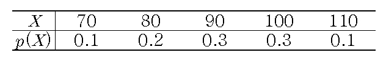
(풀이) 기대값 : \[E(X)=70(0.1)+80(0.2)+90(0.3)+100(0.3)+110(0.1)=91\]
분산 : \[\begin{aligned} \sigma^2=E(X-\mu)^2&=\sum_x (x-\mu)^2p(x)\\ &=(70-91)^2(0.1)+(80-91)^2(0.2)+\cdots+(110-91)^2(0.1)\\ &=129\end{aligned}\]
표준편차 : \(\sigma=\sqrt{\sigma^2}=\sqrt{129}\approx 11.36\)
확률변수 \(X\)의 분산은 다음과 같다. \[Var(X)=E(X^2)-[E(X)]^2\]
(증명) \[\begin{aligned} Var(X)&=E(X-\mu)^2=E(X^2-2\mu X+\mu^2) \\ &=E(X^2)-2\mu E(X) +\mu^2=E(X^2)-[E(X)]^2\end{aligned}\]
연속형 확률변수의 경우 \[\begin{aligned} Var(X)&=E(X-\mu)^2=\int_{\infty}^{\infty}(x-\mu)^2f(x)dx=\int_{\infty}^{\infty}x^2f(x)-2\mu xf(x) +\mu^2f(x)dx \\ &=\int_{\infty}^{\infty}x^2f(x)dx-2\mu \int_{\infty}^{\infty}xf(x)dx+\mu^2\int_{\infty}^{\infty}f(x)dx\\ &=E(X^2)-2\mu^2 +\mu^2=E(X^2)-E(X)^2 \end{aligned}\]
\(X\)가 이산형 확률분포 \(p(x)\)를 가지는 이산형 확률변수 또는 \(X\)가 연속형 확률분포 \(f(x)\)를 가지는 연속형 확률변수라고 할 때 확률변수 \(X\)의 함수인 확률변수 \(g(X)\)의 분산은 다음과 같다. \[Var(g(X))=E(g(X)-\mu_{g(X)} )^2=\begin{cases} \sum_x (g(x)-E(g(X)))^2p(x), \hskip5pt X\text{가 이산형인 경우} \\ \int_{-\infty}^{\infty}(g(x)-E(g(X)))^2f(x)dx, X\text{가 연속형인 경우} \end{cases}\]
확률변수 \(X\)의 확률분포가 다음과 같이 주어졌을 때 \(g(X)=3x+1\)의 기대값과 분산을 계산하라.
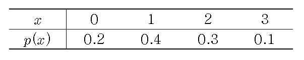
(풀이) \[정리 4.4\]에 따라 확률변수 \(3X+1\)의 평균을 구하면 \[\begin{aligned} E(3X+1)&=\sum_{x=0}^3 (3x+1)p(x)\\ &=1(0.2)+4(0.4)+7(0.3)+10(0.1)=4.9\end{aligned}\]
에 따라 확률변수 \(3X+1\)의 분산을 구하면 \[\begin{aligned} Var(3X+1)&=E(3X+1-4.9)^2\\ &=E(9X^2-23.4X+15.21)\\ &=\sum_{x=0}^3 (9x^2-23.4x+15.21)p(x)\\ &=15.21(0.2)+0.81(0.4)+4.41(0.3)+26.01(0.1)=7.29\end{aligned}\]
확률변수 \(X\)의 확률분포가 다음과 같이 주어졌을 때 \(g(x)=x^2\)의 기대값과 분산을 계산하라.
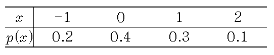
- (풀이) \[\begin{aligned} E(X^2)&=\sum_{x=-1}^2 x^2p(x)\\ &=(-1)^2(0.2)+0^2(0.4)+1^2(0.3)+2^2(0.1)=0.9\\ Var(X^2)&=E(X^2-0.9)^2=E(X^4-1.8X^2+0.81)\\ &=\sum_{x=-1}^2 (x^4-1.8x^2+0.81)p(x)\\ &=0.01(0.2)+0.81(0.4)+0.01(0.3)+9.61(0.1)=1.29\end{aligned}\]
4.3.3 체비셰프 부등식
마코프 부등식(Markov inequality) \(X\)는 확률변수이고, 임의의 함수 \(U(X)\ge 0\)와 임의의 상수 \(c>0\)에 대해 다음의 부등식이 성립한다. \[P(U(X)\ge c)\le\frac{E(U(X))}{c}\]
(증명) \[\begin{aligned} E(U(X))=\int_{-\infty}^{\infty}U(x)f(x)dx&=\int_{\{x:U(x)\ge c\}}U(x)f(x)dx+\int_{\{x:U(x)< c\}}U(x)f(x)dx \\ &\ge \int_{\{x:U(x)\ge c\}}U(x)f(x)dx\\ &\ge \int_{\{x:U(x)\ge c\}}cf(x)dx=cP(U(X)\ge c)\end{aligned}\]
양변을 \(c\)로 나누어 주면 마코프 부등식이 성립한다.
체비셰프 부등식(Chebyshev’s inequality) 확률변수 \(X\)의 평균과 분산이 각각 \(\mu\)와 \(\sigma^2\)을 가질 때 (단, \(\mu <\infty\), \(\sigma^2<\infty\)), \(k>0\)인 상수에 대해 다음의 부등식이 성립한다. \[P(|X-\mu|\ge k\sigma)\le\frac{1}{k^2}\]
(증명)
마코프 부등식에 \(U(X)=(X-\mu)^2, \hskip3pt c=k^2\sigma^2\) (단 \(k>0\))라고 놓으면, 체비셰프 부등석이 성립
또는 \(P(|X-\mu|< k\sigma)\ge 1-\frac{1}{k^2}\)을 만족한다.
만약 \(k=2\)이면 \[P(\mu -2\sigma<X<\mu+2\sigma)\ge\frac{3}{4}\] 즉, 유한의 분산을 갖는 임의의 확률변수 \(X\)에 대하여 \(X\)가 평균의 \(2\sigma\) 범위 내에 있게 될 확률은 최소한 \(\frac{3}{4}\)이다.
체비셰프 규칙과 경험적 규칙
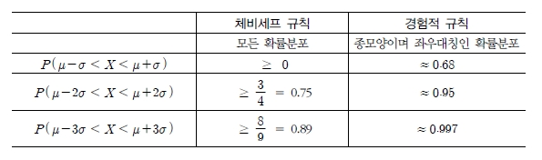
비대칭분포와 좌우대칭분포
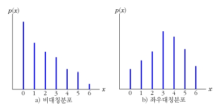
확률변수 \(X\)가 \(P(X\le0)=0\)이고 \(\mu=E(X)\)라고 할 때 \(P(X\ge 2\mu)\le\frac{1}{2}\)임을 보여라.
(풀이)
\(P(|X-\mu|\ge k\sigma)\le \frac{1}{k^2}\)에서 \(k=\sqrt{2}\), \(\sigma=\frac{\mu}{\sqrt{2}}\)로 놓으면
\(P(|X-\mu|\ge k\sigma)=P(|X-\mu|\ge \mu)\le\frac{1}{2}\)이 되며
\(P(X\le 0)=0\)이므로 \(P(X\ge 2\mu)\le \frac{1}{2}\)이 성립한다.
계산기 부품을 만드는 회사에서 1상자에 500개씩 생산된 부품을 넣어서 출고한다. 확률변수 \(X\)를 500개 부품이 들어있는 상자당 불량품의 개수라 할 때 \(X\)의 확률분포는 다음과 같다.
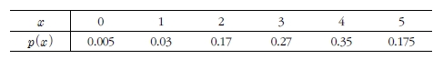
\(\mu=E(X)\)를 구하고 이 의미는 무엇인지 설명하라.
\(\sigma\)를 구하라
확률분포를 그림으로 나타내라. \(\mu\)와 구간 (\(\mu-2\sigma, \mu+2\sigma\))를 그래프에 나타내라. 체비셰프 규칙과 경험적 규칙을 이용하여 \(X\)가 \(\mu\pm 2\sigma\) 구간 내에 있을 근사적 확률과 정확한 확률을 구하여 비교하라.
각 상자에서 불량품의 개수가 한 개 이하일 것이라고 예상할 수 있는가?
(풀이)
\(\mu=E(X)=\sum_x xp(x)=1(0.03)+2(0.17)+3(0.27)+4(0.35)+5(0.175)=3.455\)
평균적으로 상자 당 불량품의 개수는 3.455이다. 이는 상자 당 불량품의 개수를 파악하는 실험을 무수히 많이 시행하면 상자 당 불량품이 평균적으로 3.455개가 된다는 것을 의미한다.
\(\sigma^2=\sum_x x^2p(x)-\mu^2=1^2(0.03)+2^2(0.17)+3^2(0.27)+4^2(0.35)+5^2(0.175)-3.455^2=1.178\)
따라서 \(\sigma=\sqrt{1.178}\approx 1.085\)
불량품의 개수가 한 개 이하는 \(\mu\pm2\sigma\) 범위 밖이며, 체비셰프 규칙에 의해 25%이하, 경험적 규칙에 의해 5%의 가능성을 지닌다. 또한 정확한 확률은 \(P(X=0)+P(X=1)=0.035\)이다. 따라서 임의의 상자에서 불량품이 한 개 이하가 관측될 가능성은 매우 희박하다.
\(\mu\pm2\sigma=3.455\pm2(1.085)=(1.285, 5.625)\)이다.
체비셰프 규칙을 이용하면 75%이상이 구간안에 포함되며, 경험적 규칙을 이용하면 관측된 \(X\)의 95% 정도가 구간 내에 포함된다. \(X\)가 \(\mu\pm2\sigma\)내에 있게 될 정확한 확률은 \[P(1.285<X<5.625)=P(X=2)+P(X=3)+P(X=4)+P(X=5)=0.965\]
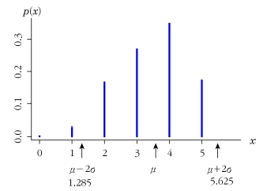
확률변수 \(X\)는 다음의 확률분포를 갖는다고 할 때 \(\mu, \sigma^2\)과 \(\sigma\)를 구하라. 구간 \(\mu\pm2\sigma\)안에 포함될 \(x\)를 구하고, 체비셰프 부등식에 의해 \(X\)가 이 구간안에 포함될 확률을 구하라.
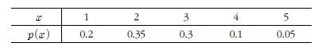
(풀이)
\(\mu=\sum_xxp(x)=1(0.2)+2(0.35)+\cdots+5(0.05)=2.45\)
\(\sigma^2=\sum_x(x-\mu)^2p(x)=(1-2.45)^2(0.2)+(2-2.45)^2(0.35)+\cdots+(5-2.45)^2(0.05)=1.1475\)
\(\sigma=\sqrt{\sigma^2}=\sqrt{1.1475}=1.0712\)
\(\mu\pm2\sigma=2.45\pm(1.0712)=(0.3076, 4.5924)\)
따라서 구간안에 포함되는 \(x\)는 1, 2, 3, 4이다. 이때 체비셰프 규칙에 의해 관측값이 구간안에 포함될 확률은 0.75이상이다.
4.3.4 선형결합으로 이루어진 확률변수의 평균과 분산
확률변수 \(X\)의 기대값 \(E(X)\)를 알고 있으면 \(X\)의 1차식으로 이루어진 다른 확률변수의 기대값도 쉽게 구할 수 있음
마찬가지로 \(Var(X)\)를 알고 있으면 \(X\)의 1차식으로 이루어진 다른 확률변수의 분산도 쉽게 구할 수 있음
임의의 상수 \(a, b\)에 대하여 1. \(E(aX+b)=aE(X)+b\) 또는 \(\mu_{aX+b}=a\mu_X+b\) 2. \(Var(aX+b)=a^2Var(X)\) 또는 \(\sigma_{aX+b}^2=a^2\sigma_X^2\) 3. \(\sigma_{aX+b}=|a|\sigma_X\), \(\sigma_{aX}=|a|\sigma_X\), \(\sigma_{X+b}=\sigma_X\)
- (증명) \[\begin{aligned} E(aX+b)&=\int_{-\infty}^{\infty} (ax+b) f(x)dx\\ &=a\int_{-\infty}^{\infty}xf(x)dx+b\int_{-\infty}^{\infty}f(x)dx\\ &=aE(X)+b\end{aligned}\] \[\begin{aligned} Var(aX+b)&=E[(aX+b)-(a\mu+b)]^2\\ &=E[a(X-\mu)]^2\\ &=a^2E(X-\mu)^2\\ &=a^2Var(X)\end{aligned}\]
\(E(X+4)=10\), \(E[(X+4)^2]=116\)일 때, \(E(X)\), \(Var(X)\), \(Var(X+4)\)를 구하라.
(풀이) \(E(X+4)=E(X)+4=10\) \(\therefore E(X)=6\)
\(E[(X+4)^2]=E(X^2)+8E(X)+16=E(X^2)+8\cdot6+16=116\) \(\therefore E(X^2)=52\)
\(Var(X)=E(X^2)-E(X)^2=52-6^2=16\), \(V(X+4)=Var(X)=16\)
어느 회사의 주가의 수익성에 대해 조사하였더니 기대수익이 500, 분산이 200이었다. 만일 수익이 세 배가 되었다면, 그 때의 기대수익과 분산은 어떻게 되겠는가? 그리고, 수익이 세 배가 된 이후로 추가로 200이 더 올랐다면 기대수익과 분산은 어떻게 되겠는가?
(풀이) \(E(X)=500\), \(Var(X)=200\), \(E(3X)=3E(X)=1500\), \(Var(3X)=9Var(X)=1800\)
\(E(3X+200)=3E(X)+200=1700\), \(Var(3X+200)=9Var(X)=1800\)
확률변수 \(X\)는 평균이 \(\mu\)이고 분산이 \(\sigma^2\)이다. \(b\)의 함수인 \(E[(X-b)^2]\)가 \(b=\mu\)일 때 최소값을 가짐을 증명하라.
(풀이) \[\begin{aligned} Var(X-b)&=E[(X-b)^2]-[E(X-b)]^2\\ E[(X-b)^2]&=Var(X-b)+[E(X-b)]^2\\ &=Var(X)+(E(X)-b)^2\\ &=(b-E(X))^2+Var(X)\end{aligned}\]
따라서 \(b=E(X)=\mu\)일 때 \(E[(X-b)^2]\)은 최소값 \(Var(X)=\sigma^2\)을 가진다.
4.4 적률과 적률생성함수
확률변수의 적률 또는 분포의 적률은 확률분포를 가지는 확률변수의 거듭제곱(power)의 기대값을 의미
확률변수 \(X\)의 1제곱, 다시 말해 \(X\)의 1차 적률이 \(X\)의 모평균을 의미
\(X\)가 기대값이 존재하는 확률변수라면 \(X\)의 \(r\)차 적률(moments)은 \(\mu_r'\)이라고 표현하고 다음과 같이 구한다. \[\mu_r'=E(X^r)\]
\(X\)가 확률변수라면 \(a\)에 대한 \(X\)의 \(r\)차 중심적률(central moments)은 \(E[(X-a)^r]\)로 정의된다. 만약 \(a=\mu_X\)라면 \(\mu_X\)에 대한 \(X\)의 \(r\)차 중심적률은 \(\mu_r\)이라고 표현하고 다음과 같이 구한다. \[\mu_r=E[(X-\mu_X)^r]\]
정의에 의해 \(\mu_1=E[(X-\mu_X)]=0\)이고 \(\mu_2=E[(X-\mu_X)^2]\)이므로 \(X\)의 평균은 1차 적률, 분산은 2차 중심적률임. 만약 \(X\)의 확률분포가 적률이 존재하고 \(\mu_X\)를 중심으로 대칭이라면 \(X\)의 홀수차 중심적률은 항상 0으로 나타남
확률변수 또는 확률분포의 1차부터 4차까지의 적률 및 중심적률은 확률분포의 다양한 특성을 측정하는데 사용됨
확률변수 \(X\) 또는 \(X\)의 확률분포의 \(q\)번째 분위수(quantile), \(0<q<1\), \(\xi_{q}\)는 \(F(\xi)\ge q\)를 만족하는 가장 작은 \(\xi\)를 말한다.
확률변수 \(X\)의 중앙값(\(med(X)\))은 \(P[X\le med(X)]\ge\frac{1}{2}\)와 \(P[X\ge med(X)]\ge\frac{1}{2}\)을 만족하므로 다음과 같이 정리됨 \[\int_{-\infty}^{med(X)} f(x)dx=\frac{1}{2}=\int_{med(X)}^{\infty}f(x)dx\]
1차 적률 \(E(X)\)가 \(X\)의 확률분포의 중심에 위치하고 중앙값 또한 \(X\)의 확률분포의 중심을 설명하기 위해 사용됨
\(X\)의 확률분포의 특성을 설명하는 세 번째 척도는 \(f(x)\)가 최대값을 갖는 지점인 최빈값(mode)이며 \(X\)의 확률분포의 중심위치에 대한 특성은 평균, 중앙값, 최빈값 이 세 개의 척도로 설명됨
\(X\)의 확률분포의 또 다른 특성인 퍼짐의 정도(산포)는 2차 중심적률인 분산으로 설명됨
분산의 대안적인 척도로 사분위수 범위(\(\xi_{0.75}-\xi_{0.25}\))가 사용되기도 함
중심과 산포가 다른 두 확률분포
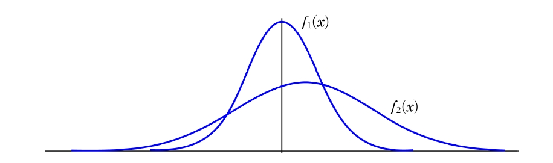
\(\mu_X\)에 대한 \(X\)의 3차 중심적률 \(\mu_3\)은 치우침의 척도인 왜도(skewness)를 의미
대칭적인 분포는 \(\mu_3=0\)를 의미하고 오른쪽으로 치우친 분포는 음의 3차 중심적률, 왼쪽으로 치우친 분포는 양의 3차 중심 적률을 가짐
왜도계수는 산포의 정도(분산)의 영향력을 제거하기 위해 \(E(X-\mu)^3/\sigma^3=\mu_3/\sigma^3\)을 사용
왜도가 다른 두 확률분포
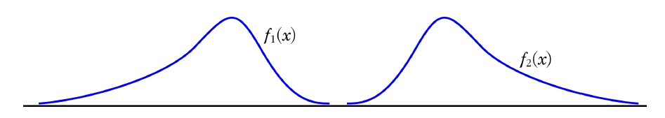
\(\mu_X\)에 대한 \(X\)의 4차 중심적률 \(\mu_4\)는 뾰족함의 척도인 첨도(kurtosis)를 의미
정규분포는 \(\mu_4=3\)이 되며 정규분포보다 중심 쪽이 더 평평하다면 3보다 작은 4차 중심적률, 정규분포보다 중심쪽이 더 뾰족하다면 3보다 큰 4차 중심적률을 가짐
첨도계수는 왜도계수와 마찬가지로 산포의 정도(분산)의 영향력을 제거하기 위해 \(E(X-\mu)^4/\sigma^4-3=\mu_4/\sigma^4-3\)를 사용
첨도가 다른 두 확률분포
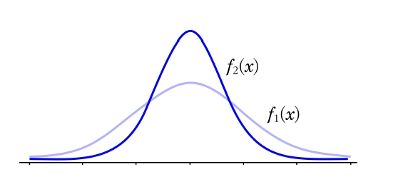
확률변수 \(Y\)의 확률밀도함수는 다음과 같다. \[f(y)=\begin{cases} \frac{1}{25}y, \hskip5pt 0\le y <5\\ \frac{2}{5} - \frac{1}{25}y, \hskip5pt 5\le y \le 10\\ 0, \hskip5pt \text{그 외} \end{cases}\] \(\xi_q\)를 \(q\)번째 분위수 (\(0\le q \le 1\))라고 할 때, \(\xi_q\)를 구하라.
(풀이) 먼저 누적분포함수를 구하면 다음과 같다. \[F(y)=\int_0^yf(t)dt=\int_0^y\frac{1}{25}tdt=\frac{y^2}{50}, \hskip5pt 0\le y <5\] \[\begin{aligned} F(y)=\int_0^y f(t)dt &=F(5)+\int_5^yf(y)dt\\ &=\frac{1}{2} + \int_5^y\frac{2}{5}-\frac{t}{25}dt=\frac{2y}{5}-\frac{y^2}{50}-1, \hskip5pt 5\le y <10\end{aligned}\]
누적확률분포 \[F(y)=\begin{cases} 0,\hskip5pt y<0\\ \frac{y^2}{50}, \hskip5pt 0\le y <5\\ \frac{2y}{5}-\frac{y^2}{50}-1, \hskip5pt 5\le y <10\\ 1, \hskip5pt y>10 \end{cases}\]

\(F(\xi_q)=q\)이므로 \(\xi_q=F^{-1}(q)\)이다. 따라서 \(\xi_q\)는 다음과 같다. \[\xi_q=\begin{cases} \sqrt{50q}, \hskip5pt 0\le q <0.5\\ 10-5\sqrt{2(1-q)}, \hskip5pt 0.5\le q \le 1 \end{cases}\]
확률변수 \(X\)에 대해 \(X\)의 \(r\)차 계승적률(factorial moment)은 다음과 같이 정의된다.(여기서 r은 양의 정수) \[E[X(X-1)\cdots(X-r+1)]\]
확률변수의 적률은 통계학에서 매우 중요한 역할을 함
확률변수의 적률이 매우 중요하므로 모든 적률을 표현할 수 있는 함수가 존재한다면 매우 유용할 것이며, 이러한 함수를 적률생섬함수라 함
만약 적률생성함수가 존재한다면 적률생성함수 \(m(t)\)는 연속적으로 미분이 가능함
만약 적률생성함수가 \(t\)에 대하여 \(r\)번 미분가능하다면 다음과 같음 \[\frac{d^r}{dt^r}m(t)=\int_{-\infty}^{\infty}x^re^{xt}f(x)dx\]
\(t\)가 \(0\)에 접근 해 가면(\(t\rightarrow 0\)) 다음과 같음 \[\frac{d^r}{dt^r}m(0)=E[X^r]=\mu_r'\]
여기서 좌변 \(\frac{d^r}{dt^r}m(0)\)는 \(t\)가 \(0\)에 접근해갈 때 계산되는 \(m(t)\)의 \(r\)번째 미분을 의미
확률분포의 적률은 적률생성함수로부터 미분을 통해 구할 수 있음
확률변수 \(X\)는 확률밀도함수 \(f(x)=\lambda e^{-\lambda x}\), \(0<x<\infty\)를 따른다고 하자. 적률생성함수를 이용하여 1차, 2차 적률을 구하라.
(풀이)
적률생성함수는 \[m(t)=E[e^{tX}]=\int_0^{\infty} e^{tx}\lambda e^{-\lambda x}dx=\frac{\lambda}{\lambda-t}, \hskip5pt \lambda>t\] 이므로 1차, 2차 적률은 다음과 같다. \[m'(t)=\frac{d}{dt}m(t)=\frac{\lambda}{(\lambda-t)^2}, \hskip5pt m'(0)=E(X)=\frac{1}{\lambda}\] \[m''(t)=\frac{d^2}{dt^2}m(t)=\frac{2\lambda}{(\lambda-t)^3}, \hskip5pt m''(0)=E(X^2)=\frac{2}{\lambda^2}\]
확률변수 \(X\)의 기대값이 존재한다면 \(E(t^X)\)를 계승적률생성함수(factorial moment generating function)라고 한다.
확률변수 \(X\)는 확률질량함수 \(p(x)=\left( \frac{1}{2}\right) ^{x+1}\), \(x=0, 1, 2, 3, \ldots\)를 따른다고 할 때 계승적률생성함수를 구하라.
(풀이)
정의에 의해 계승적률생성함수는 다음과 같다. \[\begin{aligned} E(t^X)=\sum_{x=0}^\infty t^x \left( \frac{1}{2}\right) ^{x+1}&=\frac{1}{2}+\frac{1}{2}\left( \frac{1}{2}\right) t+\frac{1}{2}\left( \frac{1}{2}\right) ^2t^2+\frac{1}{2}\left( \frac{1}{2}\right) ^3t^3\cdots\\ &=\frac{\frac{1}{2}}{1-\frac{t}{2}}=\frac{1}{2-t}, \hskip5pt t<2\end{aligned}\]
확률변수 \(X\)는 확률질량함수 \(p(x)=\frac{e^{-\lambda}\lambda^x}{x!}\), \(x=0, 1, 2, 3, \ldots\)를 따른다고 하자. 계승적률생성함수를 이용하여 1차 적률을 구하라.
- (풀이) 맥크로닌 무한 급수 전개(Maclaurin infinite series expansion)에 따라 \(e^\lambda\)는 다음과 같다. \[e^\lambda=1+\lambda+\frac{\lambda^2}{2!}+\frac{\lambda^3}{3!}+\cdots=\sum_{x=0}^\infty \frac{\lambda^x}{x!}\] 따라서 계승적률생성함수는 \[E(t^X)=\sum_{x=0}^\infty \frac{t^xe^{-\lambda}\lambda^x}{x!}=e^{-\lambda}e^{t\lambda}=e^{\lambda(t-1)}\] 이므로 1차 적률은 다음과 같다. \[\frac{d}{dt}E(t^x)=\frac{d}{dt}e^{\lambda(t-1)}=\lambda e^{\lambda(t-1)}, \hskip10pt \frac{d}{dt}E(t^X)|_{t=1} =E(X)=\lambda\]